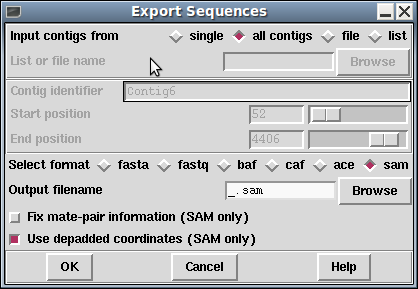

This function exports sequence and annotation data from a Gap5 database to a variety of assembly formats.

The fasta and fastq formats are basic sequence-only or sequence plus quality, with no support for contigs or alignments. The BAF, CAF, ACE and SAM formats all hold assembly data and so are reasonably complete representatives of data within Gap5. Note that ACE does not directly support quality values and this export function does not create the associated phdball file that houses this data.
There is also no direct support for BAM, however command line tools like samtools or picard can convert the SAM file into BAM format. The SAM file should already be sorted by position.
For SAM only there are additional options: whether to fix mate-pair information and whether to use depadded coordinates. This former will ensure that the MRNM (Mate Reference Name), MPOS and ISIZE fields are filled out. Note that this considerably slows down the speed of exporting, so it is disabled by default.